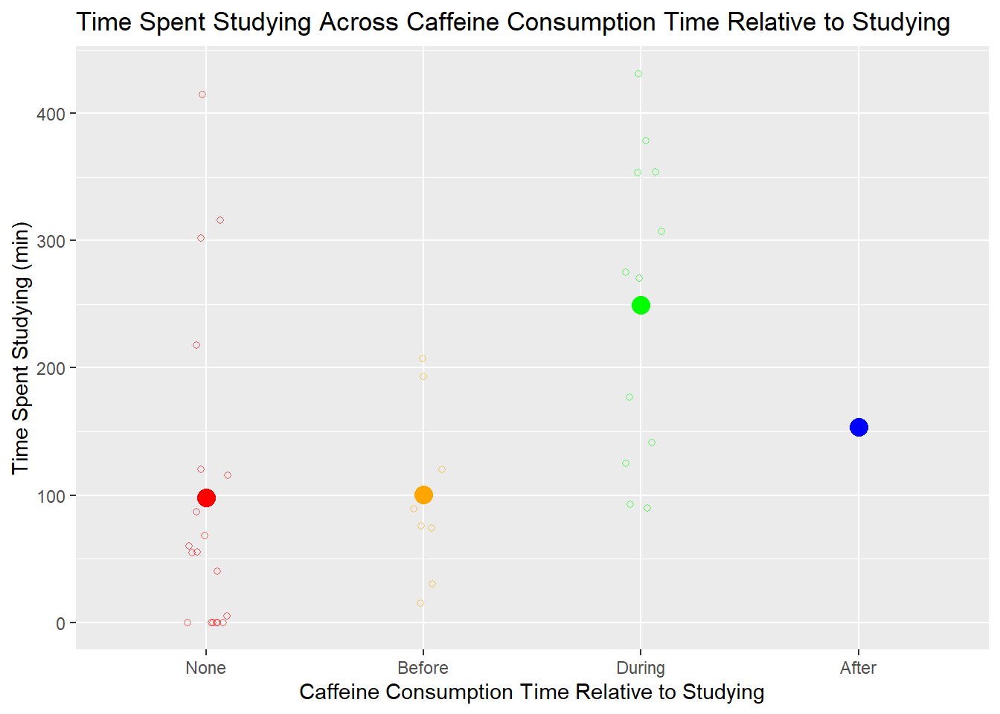

library(tidyverse)
library(here)
library(flextable)
library(janitor)
library(readxl)ENVS-193DS_homework-03
Github repo: https://github.com/kathrynk04/ENVS-193DS_homework-03.git
Problem 1: Personal data
a. Data summarizing
I could calculate the mean number of minutes I spent studying to compare average time spent studying between days that I consume caffeine before, during, or after studying because caffeine energizes me, so I think I spend more time studying on days that I consume caffeine before and during studying. On days that I don’t drink caffeine or I drink caffeine after studying, I think I’m more likely to do more low-energy activities than studying because studying requires more concentration and effort.
b. Visualization
my_data <- read_csv( # reading in the csv file
here("data", "my_data.csv")) |> # telling R where the file is located
clean_names() |> # cleaning the names
mutate(consumed_before_during_after_working = as_factor(consumed_before_during_after_working), # making when the caffeine was consumed relative to studying a factor
consumed_before_during_after_working = fct_relevel(consumed_before_during_after_working, # changing the factor orders
"None",
"Before",
"During",
"After"))
ggplot(data = my_data, # creating the data frame
aes(x = consumed_before_during_after_working, # setting time caffeine was consumed relative to studying as the x-axis
y = time_spent_working_min, # setting the time spent working as the y-axis
color = consumed_before_during_after_working)) + # coloring by time caffeine was consumed relative to studying
labs(x = "Caffeine Consumption Time Relative to Studying", # labeling the x-axis
y = "Time Spent Studying (min)", # labeling the y-axis
title = "Time Spent Studying Across Caffeine Consumption Time Relative to Studying") + # creating the title
geom_jitter(width = 0.1, # creating the jitter plot and setting width as 0.1
height = 0, # getting rid of vertical jitter
shape = 21, # making the data points empty circles
alpha = 0.6) + # setting the transparency of data points
stat_summary(geom = "point", # including points in each relative time
fun = mean, # putting the points where the mean time spent studying is
size = 4) + # adjusting the point size
scale_color_manual(values = c("None" = "red", # setting the colors of each group
"Before" = "orange",
"During" = "green",
"After" = "blue")) +
theme(legend.position = "none") # removing the legend
c. Caption
Figure 1: Time spent studying in minutes across caffeine consumption time relative to studying. Points are colored according to whether caffeine was consumed before studying, during studying, after studying, or not at all. The small circles that aren’t filled in are the data points and the large, filled in circles are the mean time spent studying in minutes for each relative caffeine consumption time.
d. Table presentation
ft <- my_data |> # making an object named "ft" with my data in it
select(consumed_before_during_after_working, time_spent_working_min) |> # selecting for time caffeine was consumed relative to studying and time spent working
group_by(consumed_before_during_after_working) |> # grouping by time caffeine was consumed relative to studying
summarize(mean_time_spent_studying = mean(time_spent_working_min, na.rm = FALSE)) # calculating the mean time spent studying for each group
ft$mean_time_spent_studying <- round(ft$mean_time_spent_studying, 1) # rounding numbers to 1 decimal place
flextable(ft) |> # creating a flextable of my "ft" object
set_header_labels(ft, # renaming the header labels
consumed_before_during_after_working = "Caffeine Consumption Time Relative to Studying",
mean_time_spent_studying = "Average Time Spent Studying (min)") |>
set_table_properties(layout = "autofit") # setting the table layout to "autofit"Caffeine Consumption Time Relative to Studying | Average Time Spent Studying (min) |
|---|---|
None | 97.7 |
Before | 100.5 |
During | 249.7 |
After | 153.7 |
Problem 2: Affective visualization
a. Describe in words what an affective visualization could look like for your personal data
An affective visualization of my personal data could look like multiple sheets of paper that are all different lengths based on the amount of text in the paper, but instead of having actual text, a long zig-zag scribble could be used for each line, and each point of the zig-zag would represent a minute of studying. This would result in longer papers that represent days that I studied for more time, and shorter papers that represent days that I studied for less time. At the top of the visualization, I could have an image of a knocked over coffee cup with streams of coffee trailing down to each paper. The coffee would then spill onto the papers and turn the sheets brown with the zig-zag text still visible, but the amount of area that has spilled coffee on each paper would be proportional to the amount of caffeine I had drank on the paper’s date. All of the papers would be on one image with enough space between each of the papers that I can fit streams of coffee to each one.
b. Create a sketch (on paper) of your idea.

c. Make a draft of your visualization
-1.png)
d. Write an artist statement
My piece is showing how much time I spent studying and how much caffeine I consumed on multiple different days, with how much time I spent studying represented by the length of the paper and how much caffeine I consumed represented by how much of each paper is soaked in coffee. My visualization was influenced by Lorraine Woodruff-Long’s warming strips quilt, because I wanted to have colors that represent caffeine and colors that represent the time spent studying blending together, but I then tweaked the idea to become spilled coffee bleeding onto pages of different lengths. My visualization is a drawing using colored pencils on a sheet of printer paper. I decided to do lines instead of zig zags, with each centimeter in length of the line representing one minute of studying, and then I drew a box around it and measured the dimensions to find the area in square centimeters. I then divided the milligrams of caffeine consumed each day by ten, and that value for each day was then how much of the area I carved out of each paper and drew a coffee stain on.
Problem 3: Statistical critique
a. Revisit and summarize
The statistical test included in this paper is the Mann-Whitney U test. The response variables are demographic stability, public utilities, and socio-economic stability. The predictor variable is the presence or absence of tourist arrivals.

b. Visual clarity
The table could be more clear by having a more detailed caption that explains what “N”, “Mean”, and “Mean Rank” mean in the context of this statistical test and by renaming the rows to “Demographic Stability 2001-2007” and “Demographic Stability 2008-2016” so that readers would know what “Dem_Stab” stands for without having to read the text surrounding the table. It would also be more clear if the test statistics and p-values for both time periods so that readers know the results of the test without having to refer to the text around it.
c. Aesthetic clarity
The authors reduced “visual clutter” by labeling the top of each column in bold, which makes it clear what the text in each column is, but the table could be more clear by making the row labels “Dem_Stab_2001_2007” and “Dem_Stab_2008_2016” bold as well, so that it’s more obvious to readers that the values in each row are for the time period in the same row. Besides that, there is enough spacing between the columns and rows that it’s very easy to tell which values are in each row and column.
d. Recommendations
I would make the row labels bold so that it’s more clear that the values in each row represent the time period in the same row, and I would also add lines between each column to make it even more clear which column each value is in. I would add two new rows, one that includes the test statistic for each period and one that includes the p-value for each period, so that it’s easier for readers to find those values without having to refer to the text. I would change the row periods into a more readable format like “Demographic Stability 2001-2007” and I would describe what “N”, “Mean”, “Mean Rank”, the test statistics, and the p-values are in the table caption so that readers that are unfamiliar with Mann-Whitney U tests know what the values represent. Lastly, I would also include their values for alpha so that readers know what value the authors used to determine if their p-values were significant.